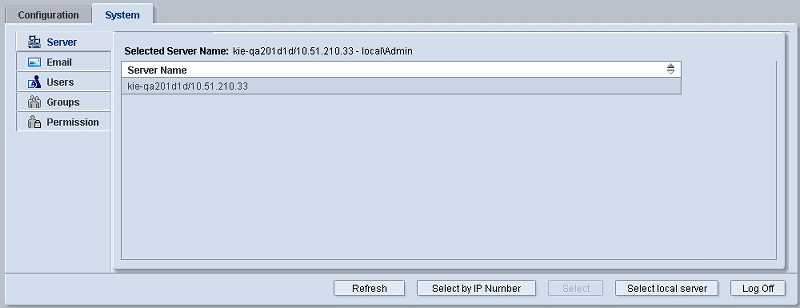
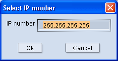

Prinect Shooter основан на клиент-серверной архитектуре. В этом процессе операции, связанные с обработкой работы, выполняются серверным компонентом, а пользовательские интерфейсы в качестве клиентских приложений позволяют пользователям получить доступ к серверному компоненту. В разделе «Администрация > Система > Сервер» вы можете связать пользовательский интерфейс Printmanager с сервером Prinect Shooter. Серверные задачи обрабатываются программами, которые реализуются как «Windows Services». Вы можете начать или выйти из этих служб вручную с помощью функции «Управление стрелковым управлением». Сервисы Prinect Shooter не имеют собственного пользовательского интерфейса. Это позволяет, с одной стороны, запускать Prinect Shooter без пользовательского интерфейса в режиме горячей папки или, с другой стороны, использовать различные пользовательские интерфейсы для управления программным обеспечением. Эти интерфейсы представляют собой пользовательский интерфейс Printmanager или браузера (локального компьютера или другого компьютера в сети). Назначая различные разрешения, вы также можете управлять Prinect Shooter одновременно через различные пользовательские интерфейсы.
Printmanager может управлять программным обеспечением Prinect Shooter только в том случае, если оно подключено к серверу, на котором установлена и работает служба Prinect Shooter. По этой причине «Административная система > Сервер» всегда является первым видом, который вы видите при запуске Printmanager.

Обычно Printmanager автоматически подключается к серверу, на который он в последний раз входил. Printmanager автоматически не подключается к серверу при первом запуске после установки или обновления. В этом случае необходимо выбрать сервер и подключить его вручную.
Нажмите «Выбрать локальный сервер», если вы хотите войти на локальный сервер. Это позволяет установить соединение без необходимости знать имя сети или IP-адрес локального сервера.
Список «Имя сервера» показывает активные системы Prinect Shooter, которые у вас есть в одной сети. Выберите строку, которую вы хотите, а затем нажмите «Выбрать», чтобы выбрать сервер Prinect Shooter, который вы хотели бы «удалить управление» вместо локального сервера. После выбора ваш локальный Prinect Shooter Printmanager устанавливает соединение с выбранным сервером и отображает данные сервера.
Нажмите кнопку «Выбрать по IP-номеру», если вы хотите выбрать сервер Prinect Shooter по IP-номеру или должны, например, потому, что сервера нет в списке или ваша сеть не поддерживает администрирование по имени.

Вы можете ввести IP-номер сервера в "Выбрать" Диалог IP-номера. Подтвердите диалог с «ОК». Попросите вашего системного администратора указать IP-адрес сервера Prinect Shooter, если вы не уверены в этом.
Кнопка «Обновить» обновляет список серверов и включает в себя серверы Prinect Shooter, которые были запущены после вызова просмотра сервера.
После установления соединения необходимо ввести зарегистрированное имя пользователя и соответствующий пароль (см. Управление пользователями).
Вы можете включить «Хранить пароль для автоматического входа», если вы уверены, что не будет несанкционированного доступа к Prinect Shooter в вашей рабочей среде. В этом случае при следующем запуске Printmanager не запрашивается имя пользователя и пароль, если Printmanager подключен к тому же серверу. Затем Printmanager запускает с использованием имени пользователя и пароля и разрешений (см. Управление пользователями) последнего пользователя, вошедшего в систему.
Используйте «Log Off» для отключения пользовательского интерфейса Printmanager от выбранного сервера Prinect Shooter. Вы должны выйти из системы, например, если вы хотите войти с другим именем пользователя и паролем (и, возможно, с другими разрешениями) или если вы хотите «переключить» Printmanager на другой сервер. Printmanager автоматически отключается от службы Prinect Shooter при выходе из Printmanager. Это означает, что вы должны подключаться к серверу каждый раз, когда вы запускаете пользовательский интерфейс Printmanager и входить в систему соответствующим образом (за исключением случаев, когда пароль был сохранен).
Copyright © 2013 Heidelberger Druckmaschinen AG